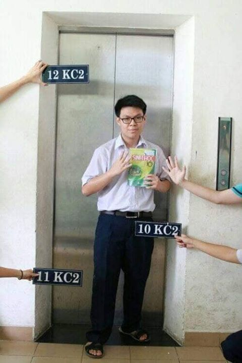

My Profile
Interest in IT
Since I was 14, 15 years old, I have been interested in IT, especially about the game industry. I like to not only play games, but also contribute to the game industry by making games or becoming a game tester. I am deeply keen on developing games after a series of success of Vietnamese players on world events, like Team Flash from VN won the Arena of Valor 2019 world tournament or in League of Legends, Vietnam region became a major region.
But, my coding is just at a beginner level. I am trying very hard to familiarize myself with it. I am quite good at math and solving logical problems, so I think I am suitable for studying IT.
I choose to study at RMIT mainly because this University is famous for its School of Technology and Science. The facilities, especially the labs here are very good, definitely better than those in Vienamese universities. Besides, graduating from an international university like RMIT makes my CV look fancier and make it easier for me to find a job.
What I expect to learn during my studies are how to do the coding more efficiently, how to make an application on either computer orsmartphone or any devices. I also want to learn to manage the whole network system of an industry. I want to learn to hack, too. (Of course just for fun)
3 personality tests that I have taken show exactly who I am. Only doing exercises or experiment can help me understand the lessons well. But, in some aspects, I'm not some kind of an entertainer because I'm not usually "hyped" and I just get hyped with the ones I know. Sometimes I'm a little bit too generous and acceptable, which I really want to change. When working as a team, I want to be more decisive, not just be dependent on my teammates or do whatever they ask me to do.
When I form a team, at first I am open to everybody. But after a period of time working together, if I or my other teammates realize someone is not doing his/her part well, we will have to consider kicking him/her from the group if he/she does not improve. After all, we have to be DECISIVE , right?
My ideal job is to be a Game Tester. A game tester is a person who works for a game company and inspects the games at the very last phase before they are published. He/she will play the games for a couple of times to identify the bugs or errors in the games, then fix them and make the games, systems or applications work correctly.
MY SKILLS AND EXPERIENCE
Problem solving & troubleshooting skills.
Communication skills to work with the team.
Have a passion for mobile games, widely played games with in-depth knowledge of different types of games.
Ability to work effectively under pressure.
At least 3 years’ experience in mobile game testing.
I don't have much experience in game testing, but I do love mobile games, especially those are played by a lot of people. About the teamwork skill, I cooperative with others quite effectively. Our projects in the past, either huge or smalls ones, were always great.
I can analyze the data quite well, but I'm not sure if I can handle the bugs and glitches or not. I'm still trying to code well, so that I will be able to fix the bugs and errors in any applications. I will study harder to achieve highest score as possible to make my CV look nicer. I will try to apply as a game tester in my second or third year to gain more experience and reach there requirement about the year of experience.